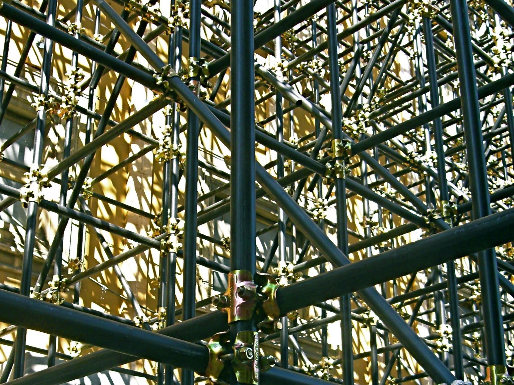

La Siria, la guerra e l’informazione

Il discorso di Obama, l’intervista ad Assad, il manifesto della rivoluzione siriana. Orwell e noi: la propaganda e la guerra. La neolingua. Il polically correct. La disinformazione. La guerra è pace. Matrici della Siria. Gli alawiti e il potere. Gli assiri e la musica. Prime sommosse a Daraa. I precedenti di Hama. Regime, ribelli e agenzie stampa. Crescendo di violenze. Interessi globali dell’area. La frammentazione delle sommosse. Il balletto delle armi chimiche. Conflitti, consumi e digiuni tra Orwell e il papa.
1. Neolingua e politically correct nei media
Il discorso che ha promosso l’impegno americano nel conflitto in Siria è indicativo nell’esporre una convergenza tra guerra e pace piuttosto tipica nella nostra attualità. Sono segnati limiti etici nell’uso delle armi chimiche, ma non le scadenze temporali del conflitto: prima o poi, alimentando un’attesa carica di promesse, si attaccherà. Obama ha dichiarato di essere pronto ad intervenire, anche senza il concorso delle organizzazioni internazionali, a motivo delle violenze perpetrate dal governo siriano sulla propria popolazione («people»). La decisione è sostenuta sulla base dell’identità tra il popolo («people») americano e il suo presidente, ribadita da 40 ripetizioni di «we» contro le 33 di «I», e l’importanza del popolo è espressa a discapito dell’enfasi sull’aspetto militare («people» ha 15 ricorrenze, ne hanno 6 «military», «war» e «security»).1
Pochi giorni dopo, Le Figaro riporta una breve intervista in cui Bashar Al Assad si discolpa dalle accuse di Usa e Francia di aver usato armi chimiche: mancano le prove, che i governi non hanno prodotto nemmeno di fronte ai loro popoli; la parola più presente è proprio «peuple», che ricorre 5 volte, con un duplice intento. Separando i popoli dai governanti, e quindi rovesciando le basi degli assunti occidentali, Assad si dichiara nemico della Francia ma non dei francesi, identificando però i suoi interessi con quelli del proprio paese sulla base della difesa materiale che a lui spetta. Le responsabilità sono integralmente rispedite al governo francese, che sostenendo i «terroristes» alimenta il rischio di una «guerre régionale» che può provocare ripercussioni negative.2
Circa un anno e mezzo prima, questa stessa visuale era ribaltata dal Manifesto della rivoluzione siriana stilato dai Comitati di coordinamento locale (CCL - la versione di cui disponiamo è tradotta in italiano), che si proponeva di realizzare una «democrazia pluralista». La «libertà» (5 ripetizioni) si oppone alle «violenze» (4 volte chiamate direttamente, altre volte evocate da parole quali «crimine», «vendetta», «rivalsa»), ed è posta in relazione ad eguaglianza e dignità, riferendosi al popolo e chiamando in causa i suoi diritti, concepiti più nel quadro della normativa internazionale che della tradizione musulmana della sharia. L’obiettivo principale della «rivoluzione» è quello di «cambiare il sistema politico, cominciando dalla rimozione dell’attuale presidente, legalmente e politicamente responsabile dei crimini commessi contro i siriani.»3
Al di là delle diversità di contenuto e stile, i tre discorsi rispondono alla gravità delle circostanze attraverso l’uso della propaganda mediatica, ed esaltano quello stesso popolo che è proprio il soggetto più colpito dai conflitti. Tutte e tre le dichiarazioni rientrano nel sistema dell’informazione, per quanto in uno stato di guerra infinita non rappresentino più una notizia. Le circostanze riconducono a considerare alcuni temi di 1984 di Orwell, dove si afferma che la maggior parte delle notizie diffuse dai mezzi di comunicazione rendono «più semplice il compito di manipolare l’opinione pubblica»4 e per cui «l’ingegnoso procedimento della guerra continua» è funzionale a risolvere il problema delle eccedenze di produzione e a tenere adeguatamente eccitato il morale delle masse. La guerra è pace.5
Il mondo del Grande Fratello orwelliano, repressivo e d’impronta sovietica, diviso in tre blocchi e dominato dalla paura, controlla tutto con le sue telecamere e impedisce anche di scrivere un diario; nel nostro mondo, liberista, permissivo e futile, il Grande fratello è il nome di un reality che celebra la sorveglianza, mentre la tracciabilità piena su Internet coinvolge tra social e blog perlopiù di pura vanità miliardi di diari e altri scritti. Nonostante queste differenze, l’idea della “guerra infinita” ricorre con modalità molto simili a quelle descritte nel romanzo, dove «pratiche da lungo tempo abbandonate, in taluni casi per centinaia di anni, come il carcere preventivo, l’uso di prigionieri di guerra come schiavi, le esecuzioni pubbliche, le torture per sollecitare le confessioni, l’uso degli ostaggi e le deportazioni in massa d’intere popolazioni, non soltanto diventano nuovamente comuni, ma sono perfino difese e tollerate da coloro che si considerano liberi e progressivi».6 La libertà è schiavitù.
I legami della mentalità comune con i condizionamenti del potere scandiscono scene, caratteri e teorie del romanzo. Il sistema filosofico diffuso dal regime è il «bispensiero», che consiste nel credere come simultaneamente vere due cose opposte; ricordare e dimenticare permette il dogma centrale della «mutabilità del passato».7 La «neolingua» impone alle masse un pensiero semplificato e incapace di distinzioni attraverso un linguaggio limitato nei vocaboli, nei significati e nelle funzioni, e si struttura in tre diversi vocabolari, che riguardano le parole semplici di uso comune, le parole composte della politica, le parole della scienza. Il suo utilizzo ha lo scopo di «rendere impossibile ogni altra forma di pensiero» e di «diminuire le possibilità di pensiero».8
Verbi e sostantivi sono associati per riduzione o per amalgama (esiste quindi «pensare», ma non il pensiero, mentre «pensabuonato» esprime l’ortodossia politica e intellettuale) ed è inibita la pensabilità del diverso (buio si dice «sluce»). La sottigliezza maggiore è nel purgare il linguaggio scientifico e tutti i termini d’uso specialistico e tecnico da ogni interesse di tipo universale e quindi dall’idea stessa di scienza. In questa maniera il bispensiero, oltre ad imporsi nelle professioni, nelle istituzioni e nelle prassi, modifica lo stesso approccio verso la conoscenza. Tutta la letteratura era in procinto di venir tradotta in neolingua, la cui assimilazione sarebbe stata definitiva entro il 2050.9
La neolingua intende controllare e modificare la realtà attraverso il controllo del linguaggio: le sue preoccupazioni risultano piuttosto simili a quanto prescrive il politically correct, formulato nell’ambito della controcultura giovanile proprio intorno agli anni nei quali Orwell ambienta il suo romanzo. Per qualche coincidenza, le politiche identitarie, per le quali sarebbe stato possibile cambiare la società eliminando ogni tipo di offesa verbale vera o presunta, caddero vittima, come ricordano Naomi Klein che inizialmente le condivise nonché Mario Perniola che le disconobbe tempestivamente, tanto dello specchio del proprio distruttivo narcisismo, quanto dell’inglobamento nelle logiche del marketing e del branding.10 Come in 1984, il sapere perde certezze e decade di autorevolezza, la realtà oggettivata dal potere prescinde da ogni scienza. L’ignoranza è forza.
Nel nostro mondo, il bispensiero si esprime dove il linguaggio è onnipresente, pur se insensato: dire di tutto, non affermare niente e impedire che qualsiasi cosa di significativo possa essere pronunciata. Ogni notizia è sottoposta a questa condizione. Per Orwell il pensiero dipende dalle parole in cui può essere espresso; le parole della comunicazione possono farci comprendere quale pensiero siamo indotti ad esprimere. Dove i media dicono “guerra umanitaria”, Israel Shamir ci sollecita a ricordare che tanto provocare e movimentare guerre lontane, quanto assecondare i flussi migratori indiscriminati, portano ambedue compimento il processo distruttivo nei confronti delle culture che accompagna la ricerca di materie prime e di mano d’opera a basso costo richiesta dalla finanza internazionale.11 Alimentiamo le guerre con i nostri consumi e in nome di questi inviamo soccorsi che comprendono truppe armate, aiuti umanitari e giornalisti embedded. Mentre il mondo si avvia verso la definitiva interconnessione, conflitti aspri e irrisolvibili coinvolgono vecchie e nuove convivenze. La guerra è pace.
Gli strumenti per falsificare l’informazione sono semplici. Un indicativo al posto del condizionale, oppure un termine neutro intriso di sensi aggiuntivi: anche semplici parole quali Islam, musulmano, occidentale, ribelle, terrorista, rivoluzione permettono di raccontare fatti reali con una semantica fasulla, per cui la verosimiglianza minima si accompagna sempre a qualche deformazione.12 Come nelle neolingua di Orwell, un sostantivo assume in sé l’azione espressa da un verbo e porta il significato ad implodere. Parole generiche diventano metonimie denigratorie, mentre smentite continue impediscono ogni riscontro. Si prescinde dal rapporto con le fonti, adulterate in partenza; manca l’aggancio con la vita reale, ma nessuno sa più cosa questa sia. E cosa possiamo sapere della Siria, come raccontarlo?
2. La costruzione del dramma siriano
La Siria antica porta con sé memorie egiziane, babilonesi, greche, romane, cristiane e islamiche, e di una grande varietà di lingue e culture. La Grande Siria moderna prende forma nel 1920 dallo smembramento dell’impero ottomano, e diventa protettorato francese insieme al Libano. 36 ore di bombe su Damasco insorta aprono all’indipendenza del 1946. Tredici colpi di stato interni e le vicissitudini della coalizione araba e dell’unione con l’Egitto portano al predominio del partito social-nazionalista Baath; nel 1970 si insedia al potere del generale Hafiz Al Assad, padre dell’attuale presidente Bashir, che appartiene alla comunità alawita.
Gli alauiti (10% circa) popolano prevalentemente la zona mediterranea di Latakia.13 Irriducibili ai sunniti (70% circa), con cui hanno però in comune le pratiche religiose, e agli sciiti, con cui condividono comunque l’importanza di Alì, hanno la particolarità di divinizzarlo al punto da renderlo elemento di una trinità insieme ad Allah e Maometto; completa la somiglianza con il cristianesimo l’uso del vino nelle cerimonie sacre. La religione è di tipo gnostico, i giovani membri della comunità sono educati a riti e credenze e possono scegliere se aderire o meno, ma non ci si può convertire. Il riconoscimento degli alauiti come veri musulmani è avvenuto solo nel 1974 da Musa Al Sadr, capo degli sciiti duedecimani del Libano.14
Tra le comunità cristiane ci sono gli assiri (5% circa), perseguitati al tempo del declino dell’impero dai Giovani Turchi e sottoposti ad una forte diaspora. Il ruolo dei cristiani è stato importante, oltre che nella storia antica del paese, anche nella giovane nazione; tuttavia, nonostante il perdurare della pacifica coesistenza con le altri componenti, hanno mantenuto posizioni marginali o di assimilazione.15
La musica assira fa comprendere quanto siano articolate le prospettive dell’area. I canti religiosi hanno somiglianze tanto con quelli bizantini, quanto con quelli latini, e si sviluppano secondo otto modi (makam) collegati alle fasi dell’anno liturgico e i cui corrispettivi con quelli arabi, persiani e turchi variano secondo la regione. La musica folk assira è influenzata da quella araba e turca e in alcune zone è stata assorbita in quella curda; le forme seguono il parlato-recitativo oppure la melodia ritmica. Dal suo estinguersi nasce una musica popolare urbana che racconta storie di amore ed emigrazione, cantate anche nello stesso brano in diverse lingue e dialetti; le affinità con le musiche di altre popolazioni sono filtrate dall’acquisizione di caratteri occidentali dovuti tanto alla modernizzazione delle aree urbane quanto alle immigrazioni.16
Le comunità cristiane comprendono anche greci, armeni e siri, che possono essere ortodossi o cattolici, e poi caldei cattolici, maroniti, protestanti, latini. Nell’agosto 2013 a Maloula, dietro la valle della Bekaa libanese, i cristiani per sopravvivere pagano la jizzhia, la tassa che proteggeva gli infedeli ai tempi del califfato, agli insorti jihadisti del Fronte Al Nusra, provenienti dalla Cecenia, dalla Libia, dall’Egitto, dall’Arabia, dal Pakistan, appostatati a Iabroud presso il monastero di Sergio e Bacco, ora roccaforte di Al Qaeda.17
In Siria sono ordinari colpi di stato e forza militare, sollevazioni e repressioni violente. Tuttavia, la dinastia alawita ha promosso la tolleranza religiosa ed è stata a lungo sostenuta dalle varie componenti etniche e confessionali. La sua azione favorisce le élite borghesi e capitaliste, trascurando le componenti agricole pur se appartenenti alla propria comunità. Il regime ha avuto la forza principale nell’esercito, anch’esso attualmente diviso su basi confessionali.18 I successi militari contro Israele sono stati minati dall’assassinio del leader libanese Rafiq Hariri nel 2005 e dal successivo ritiro delle truppe da un paese considerato per storia e contiguità come parte del proprio; le poche privatizzazioni compiute da Bashar dopo la stagione della Primavera di Damasco del 2000 hanno favorito la realizzazione di ecomostri, il formarsi di un ceto di nuovi ricchi conniventi con il clan al potere e un crescente impoverimento diffuso, contribuendo all’emergenza della crisi attuale.19
Secondo l’Osservatorio siriano per i diritti dell’uomo dall’inizio delle rivolte sono morte 110.000 persone: 45.000 tra forze governative e le milizie lealiste, oltre 40.000 civili, circa 22.000 ribelli. L’Onu riporta che un quarto dei 21 milioni di siriani hanno dovuto abbandonare le case, e circa due milioni sono espatriati, alcuni addirittura in Iraq, non propriamente un paradiso. Già il 17 settembre 2012 Human right watch denuncia le violazioni dei diritti umani commesse, sia dall’esercito siriano, che dai ribelli, accusati di aver fatto ricorso a tortura ed esecuzioni sommarie; nello stesso periodo per Der Spiegel l’esercito siriano realizza test con le armi chimiche nel nord del paese.20 Il 21 agosto 2013 un attacco con armi chimiche realizzato in centri abitati a sud ed est di Damasco provoca più di 1.300 morti. Sulla matrice si aggravano le ambiguità che segnano il conflitto già dall’inizio e, mentre la guerra devasta un eccezionale e secolare patrimonio di confluenze culturali e religiose, impazzano una disinformazione strategica disarmante e la colpevole assenza di forme efficaci di soccorso.
Nel marzo 2011 a Daraa, nel sud-ovest, 150 morti segnano le prime repressioni governative delle manifestazioni, scatenate da una rivolta di minorenni che scrivono su un muro «morte al regime». Tra i morti un gran numero di donne e bambini. Si innesca una rivolta che coinvolge molteplici identità religiose, islamiche quanto cristiane, passando per i drusi e numerose altre etnie, arabi curdi, turcomanni, armeni e assiri, oltre a profughi palestinesi e iracheni. La rete di questi elementi coinvolge soprattutto legami tribali, mentre quelli con i ceti produttivi e le componenti religiose si pongono nel medio termine.21
A giugno l’esercito di Damasco attacca a nord la cittadina di Jisr Al Shungur, i cui abitanti si ammassano alla frontiera con la Turchia. La televisione accusa i terroristi, l’opposizione dichiara che i morti dipendono da un ammutinamento di soldati che hanno rifiutato di sparare sui manifestanti. Nessuna verifica risulta possibile.22 A settembre, disertori e miliziani prendono il controllo di alcune zone di Rastan, poi riconquistata con centinaia di mezzi corazzati. A dicembre gli scontri si spostano fra le montagne di Jabal al Zawiyah, provocando numerosi morti. Goutha e Zabadani, vicino Damasco, sono prese dai ribelli, e il governo mantiene il controllo solo della prima. Attentati coinvolgono Aleppo al nord, l’esercito si scaglia contro Homs controllata dai ribelli e bombarda violentemente la vicina Hama.23
Rivolte e repressioni precedono gli eventi attuali. Hama era già stata bombardata nel 1982 per sedare una rivolta dei Fratelli musulmani iniziata otto anni prima. 38.000 morti, causati da Rifaat, fratello minore del dittatore Hafiz, che una volta allontanato dal potere si impegna con la malavita e compie azioni di destabilizzazione interna. La paralisi delle grandi potenze inasprisce i conflitti interni e alimenta la manipolazione delle rivolte; la conservazione del potere istituzionale e il mantenimento degli equilibri dell’area assume un peso più rilevante della considerazione delle scarse risorse energetiche.
La parte più rilevante dei confini è condivisa con Iraq e Turchia, il paese ha il sostegno di Iran e Russia e, insieme a Libano e Palestina, è strategico per Israele e la CIA (Wikileaks, cablogramma 24.02.2010). Le rivolte arabe hanno diverse anime, provocate dall’intersezione di fattori globali e interessi diversi: quelli «rigorosamente mascherati» delle grandi potenze, quelli già compromessi delle potenze regionali, quelli locali mai spontanei e non sempre cristallini, quelli familiari delle lotte intestine di potere. L’alternativa impossibile è quella tra governi dispotici incapaci di riforma e proteste violente che aprono a interessi criminali.24
3. I racconti della guerra
Dietro la finestra che si affaccia sul mondo siede un uomo che cerca la sua memoria. La memoria ora è colpita da manganelli e pallottole. […] In città la morte danza nuda e senza vergogna. […] A rimanere siamo noi che ascoltiamo tutto questo partire.
Questi versi di Khaled al Nassiry esprimono il senso vissuto di una vicenda nascosta da due narrazioni concorrenti e discordanti. Secondo la versione di Damasco, supportata dalla televisione di stato, dall’agenzia Sana e dal canale satellitare Al Duniya, dei terroristi sono mossi da un complotto straniero di marca sunnnita, manipolato da Israele e di matrice filo-occidentale. Secondo un’altra prospettiva, un regime violento e incapace sta per essere rovesciato da ribelli che agiscono in nome della libertà, come raccontano le emittenti panarabe Alarabiya (Arabia Saudita) e Aljazzira (Qatar), la BBC, l’agenzia Reuters, la France Press. I social network (Facebook, Twitter, Youtube) vengono utilizzati in modo massiccio da entrambe le parti, con l’immissione di materiali privi di ogni riscontro e dall’immenso impatto emotivo, dimostrando per l’ennesima volta che la sovraesposizione comunicativa distrugge irrimediabilmente tutti i messaggi.
Nei casi specifici, l’ipotesi del complotto sionista-saudita non regge di fronte all’osservazione degli equilibri regionali e delle ripercussioni del crollo della Siria sugli stessi paesi che dovrebbero sostenere le rivolte. Dall’altra parte, non si è vista alcuna «transazione pacifica» verso uno stato di diritto privo di discriminazioni e le promesse della ribellione nate dalla collaborazione di laici e Fratelli musulmani rimangono senza frutto. Nella mentalità si mantengono le distanze tra le posizioni ispirate ad un cosmopolitismo giuridico diffuso nelle aree cittadine e la rivendicazione delle identità locali propria gli abitanti delle zone rurali.
Dopo le rivolte di Daraa il regime promette assistenza e tutela ad ogni componente, e subito un nuovo governo forma comitati per elaborazione legislativa, multipartitismo e liberalizzazione dei media. Tuttavia, nulla viene concesso. Già solo le omissioni di Bashar lo renderebbero il principale colpevole del crescente dramma del paese, ma sicuramente pesano anche svolgimenti, implicazioni ed esiti di numerose rivolte finite male un po’ per tutti. Gli interessi dominanti portano soltanto ad un’amnistia parziale per i Fratelli musulmani, illegali dal 1980, e il procedere della repressione dei venerdì di protesta e degli arresti indiscriminati provocano ulteriori spaccature e nuove violenze, defezioni di ufficiali sunniti, supporti al regime di bande sabbiha (fantasma), e l’infiltrazione nelle insurrezioni di elementi legati al network terrorista di Al Qaeda.
Nuove repressioni portano all’occupazione militare delle città con mezzi blindati, all’isolamento di reti telefoniche, Internet, acqua e luce, all’ammassamento degli arrestati in scuole, cinema e stadi. L’incapacità politica si accompagna, come sempre, al controllo mediatico: se in uno scontro muoiono due manifestanti e un poliziotto, nessuno riporta il fatto per intero; per una peculiare contronarrativa ogni notizia che appare su altre fonti viene ribaltata dal regime: il grido di «Allah Akbar» dei manifestanti diventa per la tv di stato un ringraziamento per la pioggia, e così un esodo di 4.000 profughi in Turchia è commentato dal quotidiano Tisrin come «visita ai parenti».25
Il regime ha le spalle al muro ed è costretto a difendersi ad oltranza: l’alternativa è sparire. Rivolte e repressioni radicalizzano lo scontro e generano altri conflitti, le cui conseguenze hanno impatto su tutta l’area. I gruppi di insorti si moltiplicano indistinguibili e acefali, in modi che persino il teorico della «moltitudine» più hardcore faticherebbe ad apprezzare. La Nato non può intervenire e sono coinvolti soprattutto Turchia e Iran, la prima per l’influenza mediorientale che segue alle delusioni europeiste, la seconda perché sarebbe travolta da un governo sunnita della Siria. I primi ammassano armi alle frontiere e supportano i rivoltosi, i secondi inviano aiuti al governo e insieme alle truppe sciite di Hezbollah, nate in Libano nel 1982, sostengono il governo. Israele, per evitare un ignoto ancora più rischioso, si mantiene prudente. Le forze in campo sono difficili da identificare, il regime strumentalizza le paure: ai sunniti ricorda la strage di Hama del 1983, agli alawiti fa capire il ruolo insostituibile della forza, ai cristiani si mostra come baluardo contro violenze come quelle in Iraq dopo il 2003. I curdi, da sempre emarginati, si schierano con i sunniti. Una relativa indipendenza, che accosterebbe i vari interessi particolari, è del tutto impossibile.26
Mentre la devastazione della Siria si accompagna a quella di molte altre terre, proseguono le alleanze dell’occidente con Arabia Saudita e Pakistan, da decenni al centro di ogni danno possa funestare l’area mediorientale e non solo, laddove le loro trame arrivano a coprire anche i retroscena degli attentati dell’11 settembre 2001. Tuttavia, l’alleanza economica tra sauditi e gli Usa, nonostante le ricorrenti ambiguità che comprendono le perduranti relazioni del paese con Al Qaeda,27 procede dagli anni ’30 fino alla recente fornitura di 60 miliardi di dollari in armamenti utili per stabilizzare le conseguenze delle rivolte inauguratesi nel 2011.28
In Pakistan, sia dalla sua istituzione nel 1947 controllato da una potente intelligence (ISI), a sua volta pesantemente implicata con Al Qaeda e altre forme di jihadismo,29 vige una politica particolarmente criminale, come dimostra anche l’accusa a Musharraf di aver di ordinato l’omicidio della Bhutto; proprio nei giorni a ridosso della decisione sulla guerra in Siria il paese riceve un aiuto di 6.7 miliardi di dollari da parte del Fondo monetario internazionale, superiore persino alle richieste effettuate.30 Questi sono i fatti, ma pochi li considerano e nessuno si pronuncia, rendendosi complice. Influenza della neolingua, del politically correct, interessi troppo grandi oppure semplice ignoranza?
Alle componenti popolari delle rivolte si aggiungono le unità scese in campo da Libano, Libia e Iraq, equipaggiati da Arabia Saudita e Qatar e riconducibili ad Al Qaeda, da Assad accusate di ricevere finanziamenti dagli Usa, i quali a suo dire sarebbero quindi i veri responsabili dell’uso di armi chimiche. Le componenti jihadiste, inizialmente rimosse dai media in quanto dissonanti con i toni prestabiliti dalla comunicazione di guerra, sono molto attive nel farsi propaganda in rete utilizzando immagini truculente ampiamente manipolate. La cultura dell’istant-news e dell’info-horror aggira la censura e si canalizza su piattaforme online e media internazionali, facendo subentrare all’informazione di guerra una guerra dell’informazione in grado di scavalcare il fenomeno dei giornalisti embedded, che viaggiano con le forze armate e ne assumono le motivazioni.
Se il clamoroso falso della blogger Gay girl in Damascus è difeso da qualche sciocco con la labile scusa che sarebbe anche potuto essere vero, il governo da parte sua istituisce ineffabili gruppi Facebook per migliorare la propria immagine. La propaganda di «pace» è molto sostenuta da organizzazioni come Avaaz, nata nel 2007 grazie al finanziere Soros, che con circa 13,5 milioni di aderenti è la più potente rete di attivisti online; le sue campagne di consenso coinvolgono ogni cosa possa sembrare «giusta», dalla Palestina al Tibet, pur poi proponendo iniziative ambigue e dannose: tra quelle più recenti, l’istituzione della no-flight zone sulla Libia, che ne ha favorito disfacimento e saccheggio.31
L’opinione pubblica internazionale perlopiù si atteggia a pacifista con il consueto spirito di tifoseria forcaiola, alleata perfetta della vendita delle armi, parteggiando per Assad oppure per gli insorti o anche ostentando un datato e convenzionale antimperialismo, disinteressandosi dello specifico dell’area e dell’opinione della popolazione, vissuta per un anno e mezzo nel terrore degli opposti schieramenti e poi dalla possibile venuta delle mai troppo intelligenti bombe occidentali. Sono stati a lungo disconosciuti i violentissimi e crescenti abusi degli insorti, di cui solo in un secondo tempo si sono scoperte le divisioni in fronti irriducibili.32
I gruppi in lotta sono numerosi e si intrecciano sia nelle posizioni che sul territorio mantenendosi distinti. Nel nord-ovest (Aleppo, Iblid) prevalgono le forze a maggioranza laica dell’Esl, Esercito siriano libero (80.000 combattenti), ma è presente anche la brigata di ispirazione salafita Ahrar Al Sham legata al Fis, Fronte islamico siriano, di matrice islamista (25.000). Al nord (Al Hasaka, Qamishli) si impongono i jihadisti dello Stato islamico dell’Iraq e del levante (25.000), e il Fronte Al Nusra (5.000), affiliato ad Al Qaeda che opera su tutto il territorio e tende ad insediare un proprio emirato (Raqqa). Nel sud (Daraa, Damasco) ribelli moderati come quelli delle delle Brigate Faruq (14.000) hanno fitta rete di supporti e ricevono armi e aiuti da Arabia Saudita, Giordania e Francia; gli Usa hanno impedito che fossero fornite loro armi più sofisticate, così come non è interessata ad eliminare Assad, che ha consolidato il controllo sul centro (Homs).
La non coincidenza di interessi, la cui composizione richiede ulteriori specificazioni, è manipolata dal Wall Street Journal e dall’associazione Syrian emergency task force per sostenere l’attacco americano.33 Il frazionamento delle forze lascia enormi incertezze rispetto alle conseguenze di un eventuale intervento bellico34 che si propone di essere il più possibile circoscritto e simbolico, senza truppe di terra o cambio di regime, e la cui decisione richiede ampie mediazioni in tutte le istituzioni.35 Nel frattempo, la Siria continua ad implodere.
4. Gassificazione
Il sarin uccide impedendo la respirazione e resta per lungo tempo addosso a chi ne viene esposto, producendo così particolari forme di contagio. Nell’opinione della politica internazionale l’uso dei gas segna la “linea rossa” del genocidio, ma è ipocrita tanto credere che esca fuori dal nulla quanto non voler vedere gli orrori che ne precedono l’uso. Inoltre, sembrano fatte di gas anche molte ragioni, che in qualche modo sono costrette a sparire.
Dietro le opposte narrazioni, un movimento che non ha più voce, dilaniato dal settarismo, costretto ad estinguersi sul territorio e quindi a sopravvivere su web, documentando fatti che si confondono con altri racconti. La guerriglia diffusa disperde i ribelli delle manifestazioni di Homs, Aleppo e Damasco, la guerra fa soltanto gli interessi delle potenze interessate a rafforzare l’elemento sunnita a sfavore di Israele. La popolazione è vitttima, le persone non credono più nella rivoluzione, si preferisce la sicurezza. Nell’incertezza, sembrerebbe papabile che un dittatore venga eliminato per far posto ad un altro dittatore, e tuttavia sembrerebbero non esserci alternative plausibili ad Hassad. Sicuramente, la violenza chiamerà ancora altra violenza. Il presente immobile e travagliato della Siria è questo. Difficile immaginare un futuro.36
Da parte dell’occidente, travolto da crisi economiche dovute proprio a guerre fallimentari e da indecisioni da soft power obbligato, si impongono, con il consueto balletto delle ispezioni e della creazione del cattivo di turno, gli interessi tardo-coloniali della Francia e quelli di gendarmeria mondiale degli Usa. L’Inghilterra si è ritirata, la Germania è neutrale, la Spagna del tutto disinteressata, la Cina auspica una soluzione diplomatica. La Siria è fortemente protetta dalla Russia, che le ha venduto le armi chimiche, trattando inoltre con gli Usa loro gestione e stoccaggio anche nell’ipotesi di guerra. Israele lascia lavorare il Mossad ed evita coinvolgimenti diretti, perdendo progressivamente interesse per il mantenimento di un cuscinetto offerto al paese e preferendo la possibilità di mandare segnali forti all’Iran, che protegge Assad e sostiene Putin.
Il fronte coinvolge prevalentemente il Medio oriente. La Turchia ha il confine coinvolto da attacchi che, intrecciandosi con la questione curda, ne allontanano la soluzione; la base Nato di Incirlik è vicina al confine e il Consiglio nazionale siriano è all’interno del paese, e il governo temporeggia, assecondando la diplomazia internazionale. Favorevole alla guerra è anche il Qatar, che ha interesse in un nuovo oleodotto inviso invece alla Russia, ed è reputato inaffidabile per le sue disinvolte alleanze: in Siria finanzia i jihadisti del Fronte Al Nusra, in Egitto ha sostenuto i Fratelli musulmani per mollarli con la cacciata di Morsi, in Libia sta con gli occidentali e in Mali con i jiahdisti. Gli Emirati Arabi Uniti, che dal 2000 hanno speso 20 miliardi di dollari in armamenti, rendono la penisola arabica compatta aggiungendosi ai sauditi, mentre il Canada consolida il blocco nordamericano con gli Usa.37 Le maggiori preoccupazioni sono se convenga o meno far salire il prezzo del petrolio, e se davvero possa essere questo il momento buono per sollevare, da una guerra di posizione, un fronte del conflitto globale particolarmente pericoloso.
Le forti accuse della Francia verso gli attacchi chimici siriani sono state ridimensionate dalla Russia38 e smentite dall’intelligence tedesca.39 Dopo alcune esitazioni, Obama aderisce alla proposta russa del monitoraggio e della messa sotto controllo dell’arsenale chimico da parte della comunità internazionale e sostenuta da Iran. Nel frattempo, vengono rilasciati dopo cinque mesi di prigionia i giornalisti Quirico e Piccinin. Quirico dichiara che anche grazie ai mancati sostegni occidentali «i movimenti rivoluzionari sono stati gradualmente sostituti da cellule fondamentaliste islamiche»; Piccinin riferisce che in «una conversazione via Skype che abbiamo sorpreso tra ribelli» si affermava che i gas erano stati usati dai jihadisti; per una responsabilità non più comune tra gli addetti alla comunicazione, Quirico rettifica sostenendo che questa non costituisce una prova certa.40
Assad stesso ammette di avere le armi chimiche, ma dichiara di non averne mai fatto uso, e pone il termine di un anno per il loro smantellamento.41 Le conseguenze dell’accettazione da parte siriana di un piano di disarmo unilaterale potrebbe costituire un precedente per promuovere il disarmo dell’intera regione e fornire così un senso effettivo alla parola “pace”. Molto rischioso, forse più della guerra.
La lobby filo-israeliana è interessata alla messa in bando delle armi chimiche in Siria per ottenere quello sulle armi nucleari in Iran, ma il perseguimento dei suoi interessi favorirebbe soltanto i jihadisti. Rimane quindi sospeso il conflitto tra Iran e Israele, mentre la soluzione di rafforzare gli elementi moderati del Libero esercito siriano, di ridurre i flussi migratori e di cessare gli attacchi del regime alla popolazione richiederà almeno due anni. L’attacco americano non cambierebbe il confronto a lungo termine tra insorti e regime, rendendo difficile convocare la conferenza di pace Ginevra 2 e dimostrando il deterioramento dei rapporti tra est e ovest e l’impossibilità di un governo mondiale.42 Un cambiamento che potrebbe aprire prospettive è laddove l’unilateralità successiva al 1989 si infrange a favore di una nuova multipolarità in cui l’occidente appare diviso.43
L’esigenza occidentale di un impegno chiaro e ratificato sulla consegna dei gas supera le richieste russe. Sono inconciliabili anche le richieste delle parti, le quali controllano ognuna il 40% del territorio: Assad non può gestire la sua defenestrazione e il paese non rimarrebbe unito se controllato dagli insorti. I sunniti vogliono esercitare il potere della loro maggioranza, gli alauiti non glielo concederanno mai, i curdi si contentano della parziale autonomia e i cristiani «non sanno più a che santo votarsi». Una separazione in federazioni è impossibile per l’enorme mescolanza che esiste tra i diversi popoli. La revisione delle frontiere implicherebbe ricadute sull’Iraq e sui curdi della Turchia, con le conseguenze immaginabili.44
È evidente che non servono più prove di forze e intromissioni da parte di altri governi e di istituzioni internazionali: piuttosto, è necessaria la prevenzione da parte di una comunità internazionale capace di favorire condizioni favorevoli allo sviluppo, fine dello sfruttamento e salvaguardia della dignità.45 Questa denuncia del generale Fabio Mini fa comprendere come sia ormai imprescindibile cambiare l’approccio nei confronti della guerra e della pace e superare retoriche stantie, tanto guerrafondaie quanto pacifiste. Al riguardo, c’è l’idea di Tzetan Todorov di riorganizzare la difesa europea come «potenza tranquilla», istituendo un’intelligence di filosofi che possa restituire al vecchio continente autonomia decisionale e prestigio culturale e renderlo capace di interventi diplomatici in grado di garantire maggiore pluralismo agli equilibri mondiali.46
A fianco di una guerra infame e di un’informazione indegna, nel paese si mantiene un intreccio culturale e religioso ricco e antico. Nel deserto alcuni culti pregano per la definitiva rappacificazione tra Lucifero e Dio che precede la Parusia. Le spoglie di San Giovanni Battista sono custodite nella moschea omayyade di Damasco e sono venerate dagli stessi musulmani.47 In risposta a questa ricca complessità, in cui il fattore religioso costituisce un’antropologia impossibile da rimuovere in nome di un generico e piatto laicismo, il pontefice Francesco ha promosso un digiuno e una veglia per la pace rivolta «a tutti i credo e confessioni e ad ogni uomo di buona volontà», trovando adesioni anche in ambienti inclini all’ateismo.
A questa iniziativa ha aderito da Damasco il Gran Muftì di Siria, Ahmad Badreddin Hassou, leader spirituale dell’islam sunnita. A San Pietro, i versetti del Corano sono risuonati assieme alle preghiere cristiane, anche se i siriani si sono divisi in due file, a seconda dell’orientamento politico. I cattolici tradizionalisti hanno espresso contrarietà, mentre cinquanta confessori erano a disposizione dei fedeli. Il pontefice ha denunciato guerre fatte solo per vendere armi e ha sostenuto la necessità di una soluzione negoziale, come in diversi modi già espresso nei giorni precedenti.48 Il tweet del 5 settembre sembra particolarmente significativo: «Con tutta la mia forza, chiedo alle parti in conflitto di non chiudersi nei propri interessi»; il proposito appare quello di dirimere la radice dei conflitti senza negarli. Dal vertice di San Pietroburgo, invece, nessuna notizia. Ad ogni modo, fuori dall’Italia il gesto del papa non ha ricevuto molta eco.
Orwell riconosce che la popolazione («people»), quella stessa chiamata in causa da tutte le dichiarazioni ufficiali, la medesima che sconta ogni decisione di guerra e pace, ha una compiaciuta disponibilità ad essere manipolata dalla propaganda e dalla neolingua. I membri della popolazione permettono, senza farsi nemmeno pregare troppo, quell’inibizione controllata delle capacità mentali induttive e deduttive che porta, ricorda l’autore di 1984, a non cogliere le analogie, a non percepire gli errori logici, a equivocare gli argomenti più semplici, a provare avversione verso qualsiasi tentativo di elaborare una dialettica di pensiero capace di portare oltre la supina accettazione dell’esistente.49
La guerra, secondo Orwell, era una delle condizioni su cui il mondo si reggeva, ma non era più una lotta disperata per distruggere il nemico, come nei primi anni del secolo passato, e non permetteva più alcun risultato decisivo, nessun vincitore. Con l’obiettivo principale di permettere il consumo senza migliorare le condizioni di vita, si stabilisce «uno stato di guerra, con scopi limitati, tra combattenti che non sono capaci di distinguersi l’un l’altro, che non hanno una vera e propria ragione per combattersi, e che soprattutto non sono divisi da alcuna differenza ideologica.»50
Le nostre guerre globali non finiscono mai e tuttavia impazzano di ragioni e ideologie prese spesso un po’ a casaccio, distinguere è difficile e piace di più sentirsi nel giusto. Tuttavia, cosa sia giusto, difficile dirlo. Il politically correct si è imposto nei media propagando una castrazione linguistica che distrugge la complessità del reale proprio laddove le questioni sono più urgenti. Osserviamo la Siria ma non ne comprendiamo la cifra e non sappiamo dargli un volto, mentre noi non siamo più prossimi nemmeno a noi stessi. Il dramma siriano parla lingue e nomi che rimangono estranei ed è scritto in modi che dobbiamo continuamente filtrare pur non ottenendo mai alcuna certezza. La guerra è pace. La libertà è schiavitù. L’ignoranza è forza.
Fotografia: Claudio Comandini, Strutture precarie (L’Aquila, agosto 2010).
Note
Georges Malbrunot - Bahir al Assad: La mise en garde à la France, «Le Figaro», 2.09.2013.↩︎
Comitati di coordinamento locale (Ccl), Manifesto della rivoluzione siriana, in «Limes» 3/11, (Contro)rivoluzioni in corso” 07.2011, pp. 78-80.↩︎
George Orwell, 1984 (1949), Mondadori, Milano 1982, p. 231.↩︎
Ibid p. 233.↩︎
Ibid, p. 231.↩︎
Ibid, p. 239.↩︎
Ibid, p. 331; 332.↩︎
Ibid, pp. 212-242; 331-342.↩︎
Naomi Klein, No Logo (2000), Baldini&Castoldi, Milano 2002, pp.143-151; Mario Perniola, Disgusti, Costa&Nolan, Genova 1998, pp. 21-32.↩︎
Israel Shamir, Carri armati e ulivi della Palestina, Editrice C.R.T., Pistoia 2002, p. 163-164.↩︎
Francesca Bellino, Glossario del cronista onesto, in «Limes-quaderni speciali» a.4 n.1, “Media come armi” 4.2012, pp. 215-221.↩︎
Sezione Medio Oriente, Latakia, geografia, etnie punti strategici, «Geopolitical Center» 31.05.2013.↩︎
Michel Shammas, Per i cristiani è l’ora del riscatto, «Limes 1/2102», “Protocollo Iran”, pp. 183-188.↩︎
AAVV, Süryaniler - religious music, folk music, Kalan Müzik, Istanbul 2002 (cd + booklet) pp. 72-81.↩︎
Gian Micalessin, Noi cristiani di Maloula cacciati dai ribelli: volevano convertirci, «Il Giornale» 08.09.2013.↩︎
Centro Rok, Gli alauiti divisi tra fedeltà e rivolta, «Limes 1/2102» cit. pp. 197-202.↩︎
Eugenio Dacrema, Al Assad, il leader che provò a riformare la Siria, Linkiesta 10.09.2013.↩︎
Siria - I crimini dei ribelli, «Internazionale» n. 967, 21.09.2012, p. 25.↩︎
Diego Caserio, La rivoluzione damascena vista da dentro, «Limes» 1/2012, cit., p. 157-168.↩︎
Ipek Yezdani, Al confine con gli sfollati, «Hürriyet», su «Internazionale» n. 902, 17.06.2011, p. 20.↩︎
Jon Lee Anderson, L’implosione della Siria, «The New Yorker», «Internazionale» n. 938, 2.03.2012, pp. 38-45.↩︎
Fabio Mini, Mediterraneo in guerra, Einaudi, Torino 2012, pp. 139-142.↩︎
Lorenzo Trombetta, Sangue e misteri sulla via di Damasco, «Limes 3/2011» cit., pp. 65-78.↩︎
Olivier Roy, In Siria si scontrano Teheran e Ankara, «Internazionale», n. 912, 26.08.2011.↩︎
Nafeez Mosaddeq Ahmed, Guerra alla libertà Fazi Editore, Roma 2002, p. 255, passim.↩︎
Jacques Charmelot, Dal re saudita parte la controrivoluzione a suon di dollari, in «Limes 3/2011» cit., p. 42.↩︎
B Raman, Le maschere dell’ISI, da Vulcano Pakistan, «Limes» 1/2008 pp. 83-88, anche su Le maschere di Osama, «I classici di Limes» 1/2011, pp. 173-179.↩︎
Pakistan: FMI accorda piano aiuto, «Borsa Italiana», 4.09.2013.↩︎
Margherita Paolini, Siria, un caso da manuale di disinformazione strategica, «Limes-quaderni speciali» cit., pp. 105-114.↩︎
Arold Lund, Chi sono e cosa vogliono i ribelli siriani, «Internazionale» 30.08.2013, on line.↩︎
Elisabeth O. Bagy, «The Wall Street Journal», su «Internazionale» n.1016, 6.09.2013, pp. 14-15; Buio, «Internazionale« n. 1017 p. 5.↩︎
Il rischio di un nuovo Iraq, «The Independent», su «Internazionale» n. 1015, 3.8.2013, p. 19.↩︎
Niccolò Locatelli, 10 domande e 10 risposte sull’intervento militare in Siria, «Limes online» 1.09.2013.↩︎
Gabriele del Grande, Speciale Siria: la rivoluzione tradita, «Fortress Europa» 24.10.2012.↩︎
Gigi Riva, Chi va con Obama? «L’Espresso» n. 36 a. LXI, 12.09.2013, pp. 68-71.↩︎
Lavrov: prove su armi poco convincenti, «Repubblica», 2.09.2013.↩︎
Gianni Candotto, L’intelligence tedesca stronca Obama: Assad ha sempre vietato ai suoi l’uso dei gas, «Qelsi Quotidiano» 8.09.2013.↩︎
Leone Grotti, Quirico: “la rivoluzione siriana non è più quella laica”, «Tempi 9.09.2013»; Riccardo Grezzi, Piccinin: “Non è stato Assad ad usare i gas”, «Qelsi Quotidiano» 9.09.2013; Siria, Mosca: “Consegni armi chimiche”. Damasco accoglie con favore l’iniziativa, «Repubblica» 09.09.2013.↩︎
Paul Salem, Colpire Damasco perché Teheran intenda, «L’Espresso» n. 36, cit. p. 73.↩︎
Gilles Kepel, Big Bang mediorientale, «Le Monde», «Internazionale» n. 1017, 13.09.2013.↩︎
Bernard Guetta, Il rompicapo siriano, «Internazionale online», 9.11.2013.↩︎
Maso Notarianni, Fabio Mini: un generale contro la guerra, «Espresso online», 9.09.2013.↩︎
Tvetan Todorov, Il nuovo disordine mondiale, Garzanti, Milano 2003, pp. 53-60.↩︎
Antonio Picasso, Paolo Dall’Oglio, un prete sulla via di Damasco, «East» n. 46, marzo/aprile 2013, pp. 68-72.↩︎
Carlo Andrea Finotto, Il digiuno di pace di papa Francesco, «Sole 24 Ore», 7.09.2013.↩︎
George Orwell, cit. p. 237.↩︎
Ibid, cit. 213.↩︎